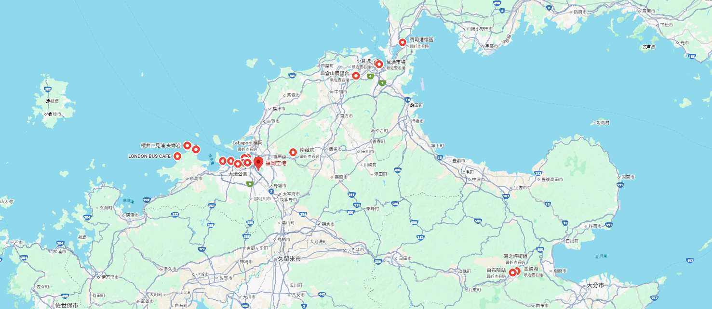

行程規劃

Day 1 (2/28 週六): 抵達福岡 & 博多市區
- 抵達福岡機場 (FUK) (11:15 抵達)
地址: 〒812-0003 福岡市博多区大字下臼井778-1
地圖: Google 地圖連結
交通: 搭乘免費接駁巴士從「國際線」航廈至「國內線」航廈，再轉乘地鐵「空港線」前往博多 (約 5 分鐘) 或天神 (約 11 分鐘)。
- 幸福pancake 福岡天神店
地址: 日本〒810-0001 Fukuoka, Chuo Ward, Tenjin, 2 Chome−7−12 吉富ビル 2階
地圖: Google 地圖連結
交通: 天神站2號出口。
資訊: 營業時間 10:30 - 19:30。
- 福岡 LaLaport
地址: 〒812-8627 福岡市博多区那珂6-23-1
地圖: Google 地圖連結
交通: 從「博多巴士總站」1F 14 號乘車處搭乘西鐵巴士 44、45 號公車直達 (約 20 分鐘)。
資訊: 營業時間 10:00 - 21:00 (商場)。鋼彈立像在戶外 24 小時可看。
- 博多運河城
地址: 〒812-0018 福岡市博多区住吉1-2
地圖: Google 地圖連結
交通: 從博多運河城附近的巴士站，例如「キャナルシティ博多前」(Canal City Hakata-mae) 站或「キャナルイーストビル前」(Canal East Bldg-mae) 站，搭乘 99 號 巴士（開往「博多港國際線航廈」方向），或者搭乘 BRT（巴士快速交通系統，通常車身是連節的），也是開往「博多港」方向，在「ベイサイドプレイス博多」(Bayside Place Hakata) 站下車，大約 15 - 20 分鐘。
資訊: 營業時間 10:00 - 21:00 (商場) / 11:00 - 22:00 (餐廳)。
- 博多灣岸廣場
地址: 福岡縣福岡市博多區築港本町13-6
地圖: Google 地圖連結
交通:
資訊: 營業時間 17:00～24:00。
Day 2 (3/1 週日): 宗教與文化巡禮 戶外行程
- 太宰府天滿宮
地址: 〒818-0117 福岡県太宰府市宰府4-7-1
地圖: Google 地圖連結
交通: 從「西鐵福岡(天神)站」搭乘西鐵天神大牟田線至「二日市站」，轉乘「太宰府線」至「太宰府站」下車 (約 30 分鐘)。
資訊: 營業時間 06:30 - 19:00 (3月)。門票免費。
- 南藏院
地址: 〒811-2405 福岡県糟屋郡篠栗町大字篠栗1035
地圖: Google 地圖連結
交通: 從「博多站」搭乘 JR 篠栗線 (福北豐線) 至「城戶南藏院前站」下車 (約 20-25 分鐘)，步行 3 分鐘即達。
資訊: 營業時間 09:00 - 17:00。門票免費 (臥佛胎內參拜 500 日圓)。
Day 3 (3/2 週一): 天神、公園與夜景 戶外行程
- 天神地下街
地址: 〒810-0001 福岡市中央区天神2丁目 地下1・2・3号
地圖: Google 地圖連結
交通: 地鐵「天神站」或「天神南站」直通。
資訊: 營業時間 10:00 - 20:00 (商鋪)。
- 博多名代 吉塚鰻魚屋
地址: 〒810-0001 福岡市中央区天神2丁目 地下1・2・3号
地圖: Google 地圖連結
交通: 地鐵「櫛田神社前站」走路過去。
資訊: 營業時間 10:00 - 21:00 (商鋪)。
- 大濠公園
地址: 〒810-0051 福岡市中央区大濠公園1
地圖: Google 地圖連結
交通: 地鐵「大濠公園站」下車，3 號或 6 號出口即達。
資訊: 公園 24 小時開放。門票免費 (日本庭園 250 日圓)。
- 福岡塔
地址: 〒814-0001 福岡市早良区百道浜2-3-26
地圖: Google 地圖連結
交通: 從「博多巴士總站」搭乘西鐵巴士 306 號；或從「天神」搭乘 W1 號，至「福岡塔」站下車。
資訊: 營業時間 09:30 - 22:00。門票 800 日圓 (持護照有外國人優惠 640 日圓)。
- 百道海濱公園
地址: 〒814-0001 福岡市早良区百道浜2-902-1
地圖: Google 地圖連結
交通: 從「福岡塔」步行 1 分鐘即達。
資訊: 24 小時開放，免費。
Day 4 (3/3 週二): Outlet 購物日
- Marinoa City Fukuoka (福岡 Outlet)
地址: 〒819-0001 福岡市西区小戸2-12-30
地圖: Google 地圖連結
交通: 從「天神」站 (天神高速巴士總站前 1A 乘車處) 搭乘西鐵巴士 333 號直達 (約 30 分鐘)。
資訊: 營業時間 10:00 - 20:00。
- 天神商圈補完
(如果 Outlet 逛得意猶未盡，晚上可搭巴士回到天神商圈繼續)
Day 5 (3/4 週三): 北九州一日遊 戶外行程
- 小倉城
地址: 〒803-0813 北九州市小倉北区城内2-1
地圖: Google 地圖連結
交通: 從「博多站」搭乘 JR 特急「音速 (Sonic)」或「閃耀 (Kirameki)」號至「小倉站」 (約 40-50 分鐘)，步行 15 分鐘。
資訊: 營業時間 09:00 - 18:00 (3月)。門票 350 日圓。
- 旦過市場
地址: 〒802-0006 北九州市小倉北区魚町4-2-18
地圖: Google 地圖連結
交通: 從「小倉城」步行約 10 分鐘。
資訊: 營業時間 10:00 - 18:00 (各店鋪不一，週日多數休息)。
- 門司港懷舊區
地址: (以門司港車站為起點) 〒801-0841 北九州市門司区西海岸1-5-31
地圖: Google 地圖連結
交通: 從「小倉站」搭乘 JR 鹿兒島本線至「門司港站」(終點站) (約 13 分鐘)。
資訊: 戶外 24 小時開放，各設施營業時間不同。
- 皿倉山展望台
地址: (皿倉山纜車山麓站) 〒805-0057 北九州市八幡東区大字尾倉1481-1
地圖: Google 地圖連結
交通: 從「門司港/小倉站」搭乘 JR 至「八幡站」下車 (約 20-30 分鐘)。出站後轉乘「皿倉山纜車免費接駁巴士」(週末及假日運行) 前往纜車山麓站。
資訊: 纜車 10:00 - 22:00。往返票 1230 日圓。 (平日無接駁車，需從八幡站搭乘計程車約 5 分鐘)
Day 6 (3/5 週四): 鄰縣漫遊 - 大分湯布院
- 湯布院 (由布院車站)
地址: 〒879-5102 大分県由布市湯布院町川北8-2
地圖: Google 地圖連結
交通: 從「博多巴士總站」搭乘「高速巴士」直達「由布院站前」(約 1 小時 40 分鐘)，比 JR 更方便且班次多。
資訊: 強烈建議提早預訂高速巴士座位。
- 湯之坪街道
地址: 〒879-5102 大分県由布市湯布院町川上 (街道)
地圖: Google 地圖連結
交通: 從「由布院站」步行 5 分鐘即達。
資訊: 營業時間 10:00 - 17:00 (各店鋪不一)。
- 金鱗湖
地址: 〒879-5102 大分県由布市湯布院町川上1561-1
地圖: Google 地圖連結
交通: 沿著「湯之坪街道」步行到底 (約 20-25 分鐘)。
資訊: 24 小時開放，免費。
Day 7 (3/6 週五): 糸島海岸線 戶外行程
- (新) 糸島交通提示
這一天是本次行程中「無車」難度最高的。 景點分散且巴士班次極少 (1-2 小時一班)。
替代方案： 建議從「JR 筑前前原站」或「九大學研都市站」搭乘計程車，或租借「電動自行車 (e-bike)」遊覽，會比等巴士更有效率。 - 櫻井二見浦 夫婦岩
地址: 〒819-1304 福岡県糸島市志摩桜井
地圖: Google 地圖連結
交通: 從「JR 九大學研都市站」搭乘「昭和巴士」西之浦線 (往西之浦)，於「二見ヶ浦 (夫婦岩前)」站下車。
資訊: 24 小時開放，免費。 - Zauo 本店 (椰林鞦韆)
地址: 〒819-0203 福岡市西区小田79-6
地圖: Google 地圖連結
交通: 位於「二見浦」附近，可步行前往，或搭乘同班巴士至「海釣公園前」站。
資訊: 營業時間 11:30 - 21:30 (平日) / 11:00 - 21:30 (假日)。
- 倫敦巴士咖啡廳
地址: 〒819-1303 福岡県糸島市志摩野北2289-6
地圖: Google 地圖連結
交通: 搭乘「昭和巴士」西之浦線至「野北」站下車。
資訊: 營業時間 11:00 - 19:00 (或日落)。
Day 8 (3/7 週六): 博多舊城區 & 完美句點
- 櫛田神社
地址: 〒812-0026 福岡市博多区上川端町1-41
地圖: Google 地圖連結
交通: 地鐵「祇園站」2 號出口步行 5 分鐘，或「中洲川端站」5 號出口步行 5 分鐘。
資訊: 營業時間 04:00 - 22:00。門票免費。
- BREAD, ESPRESSO & HAKATA &
地址: 〒812-0026 福岡市博多区上川端町1-1
地圖: Google 地圖連結
交通: 位於「川端通商店街」入口旁，從「櫛田神社」步行 2 分鐘。
資訊: 營業時間 08:00 - 20:00。
- 川端通商店街
地址: 〒812-0026 福岡市博多区上川端町
地圖: Google 地圖連結
交通: 連接「櫛田神社」和「中洲川端站」。
資訊: 營業時間 10:00 - 19:00 (各店鋪不一)。
- 那珂川水上巴士
地址: (搭乘處：福博であい橋) 〒810-0002 福岡市中央区西中洲6
地圖: Google 地圖連結
交通: 地鐵「中洲川端站」步行 5 分鐘，位於天神中央公園旁。
資訊: 營業時間 傍晚開始 (約 18:00 - 21:00)。航程約 30 分鐘，票價 1500 日圓。
- 中洲屋台
地址: (中洲清流公園一帶) 〒810-0801 福岡市博多区中洲
地圖: Google 地圖連結
交通: 從「那珂川水上巴士」搭乘處步行即達。
資訊: 營業時間 18:00 - 24:00 (各攤位不一，雨天可能休息)。
Day 9 (3/8 週日): 歸途
- 飯店 Check-out & 最後採買
資訊: D: 您的航班是 12:15 起飛，國際線建議提早 2 小時 (10:15) 抵達機場。您早上還有約 1-2 小時可在博多車站（JR HAKATA CITY）進行最後採買。 地圖: Google 地圖連結
- 前往福岡機場 (FUK) (12:15 起飛)
地址: 〒812-0003 福岡市博多区大字下臼井778-1
地圖: Google 地圖連結
交通: 從「博多站」搭乘地鐵「空港線」至「福岡機場站」(國內線航廈)，再轉乘免費接駁巴士至「國際線航廈」。
提示: 請務必預留「國內線轉國際線」接駁巴士的時間 (約 15-20 分鐘)。建議您最晚 09:45 從博多站出發。